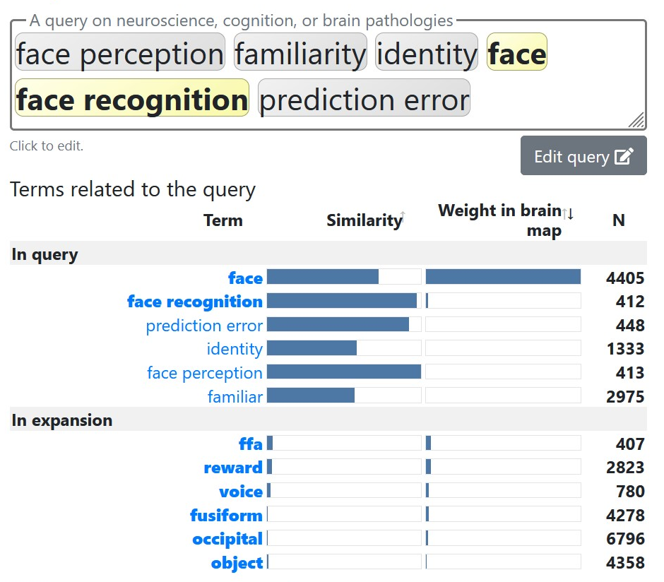

Neuroquery#
Due to the problems mentions in the other chapters, I was not able to set up a machine learing approach. Nevertheless, I want to present some result to answer validate the results of the study my project is based on. So to answer where person identity informations are processed and stored, I used a metaanylsis tool called Neuroquery.
Meta-analysis with Neuroquery#
Out there are many neuroscientific papers and each year they get more and more, so finding an answer to a specific question is quiet difficult to do manually. To find a way through the jungle of neuroscientific papers and make collecting and aggregating them faster, easier and automated, Dockès et al. [1] developed Neuroquery. What it does, is prediciting neural correlates of neuroscience concepts related to behavior, diseases, or anatomy. The predictive frameswork allows to generate brain maps by generalizing from excessively studied terms to less extensively studied terms, that are not accessible to traditional meta-analyses. Neuroquery works in a ‘dynamic, contextually-informed way that allows for mutual interactions’ (p.4). As a result high-quality brain maps are created for infrequently studied concepts. The maps predict spatial distributions of findings from which one can form regions of interest or interpret results of less studied terms. Yet it has to be noted, that the tool does not work with voxel-based null hypthesis. That being said, it is less suited to tell whether an area is activated during a study or not.
NeuroQuery is an accurate model of the literature’ and approximates well results of actual experimental data collection. It works by modeling the semantic relations underling the vocabulary of neuroscience and makes use of techniques from natural language processing. It makes better use of available information and recovers biologically plausible brain maps. Due to the semantic model, Neuroquery is not so sensitive to variations in terminology and it captures semantic similarities, which helps find related concepts and explore their associations with brain activity. Neuroquery also supports researcher with exploration of the domain knowledge across sub-fields, generation new hypotheses, construction of regions of interest or putting results into perspektive.
NeuroQuery is easily usable online and the data and source code can be freely available.
Meta-analysis for the project#
So to start with Neuroquery, I need to decicde on what terms I want to enter into the tool. For that we need to look back at the orginal paper. So what they wanted to look at ID-specific processing in the fusiform face area and occipital face area, using ambient images of celebrities and by generating and violating expectations about person ID, they tested if prediction error responses manifest in the neuroimaging signal. The study shows image-independent ID-specific adaptation effects in the FFA for famous familiar faces and in combination with the results of the OFA, the authors suggest that the ID representations in occipito-temporal regions are not yet completely clarified [2].
Baed on the paper and related, I expect that we will get a brain map that predicts high activation in FFA and OFA.
Based on that I decided on the following terms:
face perception
identity
familiarity
face recognition
face
preddiction error

After entering the terms in Neuroquery, I got this table, the brain map with the predicted brain areas and a list of related papers.
Let’s have a look at the table first.
List of terms#
Neuroquery builds a list of the term in your query, meaning the words recognized in the entered text and termns in expansion, so terms that are related to the entered ones. The table provides measures for similarity to the query and the weight in the brain map. Similarity to the query means the similarity of a term to terms in the query. It is modulated by how many times these terms are mentioned in the query and the measure is based on the co-occurrences of the terms in the literature[3]. Face, face recognition, prediction error and face perception stand-out in terms of similiarity. The weight in the brain map describes how much each term contributes to the brain map. We see that the term face conributes mainly to the brain map, which is not a suprise as it captures everything regarding faces[3]. Small contributions come from ‘face recognition’ and the related terms in the expansion from which the term ‘ffa’ contributes most.
Evaluation of the literature#
The tool list the most relevant publications related to the query, but keep in mind that it is based on the articles it is trained on. (14,000 full-text publications and 400,000 peak activations).
Some of the literature captures more general the brain regions related to face recognition[5][7] [9] [10] [13] [18] [21] and familiarity[4][6] [8] [12] and do not match the focus of the paper by Rostalski et al.
There are some studies, that report similar activations as Rostalski et al. but using different approaches. There are studies [11] using the repetion-priming paradigm. The authors conclude that the FFA showed only marginal effects of face familiarity and no reliable generalization across different face images. Rostalski et al. found, that FFA discriminates between identities independently of images, but like Pourtois et al., say that a fully image-invariant representation is probably not present in the FFA. Other studies using the fMRI-adaption paradigm and repetion-priming paragdim [14] [15] [16] [17] [19] [20] [22] [23] also found adaptation to facial identity and face-identity change effects in the FFA and the OFA, but not image-invariant adapation. Similar findings reported Rostalksi et al. between the adaption condition and the violation condition. The OFA was activated by conscious and non-conscious changes to face identity.
To sum it up, the most studies provided by Neuroquery point in the same direction as the results of the paper by Rostalski et al. It has to be noted, that the eight papers are excluded, as they did not matched the relevant topics and concept this project is about.